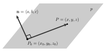

The fixed vector \(\vv\) in the definition is called a direction vector for the line. To find an equation for a line through point \(P\) in the direction of vector \(\vv\text{,}\) observe that any vector parallel to \(\vv\) will have the form \(t \vv\) for some scalar \(t\text{.}\) So, any vector emanating from the point \(P\) in a direction parallel to the vector \(\vv\) will be of the form
\begin{equation}
\overrightarrow{OP} + t \vv\tag{1.4.1}
\end{equation}
for some scalar \(t\) (where \(O\) is the origin).
The vector form of a line.
The vector form of a line through the point \(P\) in the direction of the vector \(\vv\) is
where \(\vr_0\) is the position vector \(\overrightarrow{OP}\) from the origin to the point \(P\text{.}\)
Activity1.4.2.
Let \(P_1 = (1,2,-1)\) and \(P_2 = (-2,1,-2)\text{.}\) Let \(\mathcal{L}\) be the line in \(\R^3\) through \(P_1\) and \(P_2\text{.}\)
Find a direction vector for the line \(\mathcal{L}\text{.}\)
Find a vector equation of \(\mathcal{L}\) in the form \(\vr(t) = \vr_0 + t\vv\text{.}\)
Consider the vector equation \(\vs(t) = \langle -5, 0, -3 \rangle + t \langle 6, 2, 2 \rangle.\) What is the direction of the line given by \(\vs(t)\text{?}\) Is this new line parallel to line \(\mathcal{L}\text{?}\)
Do \(\vr(t)\) and \(\vs(t)\) represent the same line, \(\mathcal{L}\text{?}\) Explain.
The three components of the vector function \(\vr(t) = \vr_0 + t\vv\) give what is called a parameterization of the line \(\mathcal{L}\text{.}\) The independent variable \(t\) is called a a parameter. Each value of the parameter \(t\) corresponds to a point on the line \(\mathcal{L}\text{.}\)
The parametric equations of a line.
The parametric equations for a line through the point \(P = (x_0,
y_0, z_0)\) in the direction of the vector \(\vv = \langle a,b,c
\rangle\) are
Comment about similarity with usual equation of a line.
Another way to think of a line in 2D is as the set of terminal points of vectors emanating from a given point \(P\) that are orthogonal to a fixed vector \(\vn\text{.}\) In \(\R^3\text{,}\) the same statement gives a way to describe planes.
Definition1.4.2.
A plane \(p\) in space is the set of all terminal points of vectors emanating from a given point \(P_0\) perpendicular to a fixed vector \(\vn\text{,}\) as shown below.

Figure1.4.3.A point \(P_0\) on a plane \(p\) with a normal vector \(\vn\)
Equations of a plane.
The scalar equation of the plane with normal vector \(\vn =\langle a,b,c \rangle\) containing the point \(P_0 = (x_0, y_0,z_0)\) is
The vector equation of the plane with normal vector \(\vn =\langle a,b,c \rangle\) containing the points \(P_0 = (x_0, y_0,z_0)\) and \(P = (x,y,z)\) is
Write a scalar equation of the plane \(p_1\) passing through the point \((0,
2, 4)\) and perpendicular to the vector \(\vn=\langle 2, -1,
1\rangle\text{.}\)
Is the point \((2, 0, 2)\) on the plane \(p_1\text{?}\)
Write a scalar equation of the plane \(p_2\) that is parallel to \(p_1\) and passing through the point \((3, 0, 4)\text{.}\) (Hint: Compare normal vectors of the planes.)
Write a parametric description of the line \(l\) passing through the point \((2,0,2)\) and perpendicular to the plane \(p_3\) described by the equation \(x+2y-2z = 7\text{.}\)
Find the point at which \(l\) intersects the plane \(p_3\text{.}\)
Activity1.4.4.
Let \(P_0 = (1,2,-1)\text{,}\)\(P_1 = (1, 0 ,-1)\text{,}\) and \(P_2 = (0,1,3)\) and let \(p\) be the plane containing \(P_0\text{,}\)\(P_1\text{,}\) and \(P_2\text{.}\)
Determine the components of the vectors \(\overrightarrow{P_0P_1}\) and \(\overrightarrow{P_0P_2}\text{.}\)
Find a normal vector \(\vn\) to the plane \(p\text{.}\)
Find a scalar equation of the plane \(p\text{.}\)
Consider a second plane, \(q\text{,}\) with scalar equation \(-3(x-1) + 4(y+3) + 2(z-5)=0\text{.}\) Find two different points on plane \(q\text{,}\) as well as a vector \(\vm\) that is normal to \(q\text{.}\)
The angle between two planes is the acute angle between their respective normal vectors. What is the angle between planes \(p\) and \(q\text{?}\)
Activity1.4.5.
This exercise explores key relationships between a pair of lines. Consider the following two lines: one with parametric equations \(x(s) = 4-2s\text{,}\)\(y(s) = -2 + s\text{,}\)\(z(s) = 1 + 3s\text{,}\) and the other being the line through \((-4, 2, 17)\) in the direction \(\vv = \langle -2, 1, 5 \rangle\text{.}\)
Find a direction vector for the first line, which is given in parametric form.
Find parametric equations for the second line, written in terms of the parameter \(t\text{.}\)
Show that the two lines intersect at a single point by finding the values of \(s\) and \(t\) that result in the same point. Then find the point of intersection.
Find the acute angle formed where the two lines intersect, noting that this angle will be given by the acute angle between their respective direction vectors.
Find an equation for the plane that contains both of the lines described in this problem.
Activity1.4.6.
This exercise explores key relationships between a pair of planes. Consider the following two planes: one with scalar equation \(4x - 5y + z = -2\text{,}\) and the other which passes through the points \((1,1,1)\text{,}\)\((0,1,-1)\text{,}\) and \((4, 2, -1)\text{.}\)
Find a vector normal to the first plane.
Find a scalar equation for the second plane.
Find the angle between the planes, where the angle between them is defined by the angle between their respective normal vectors.
Find a point that lies on both planes.
Since these two planes do not have parallel normal vectors, the planes must intersect, and thus must intersect in a line. Observe that the line of intersection lies in both planes, and thus the direction vector of the line must be perpendicular to each of the respective normal vectors of the two planes. Find a direction vector for the line of intersection for the two planes.
Determine parametric equations for the line of intersection of the two planes.